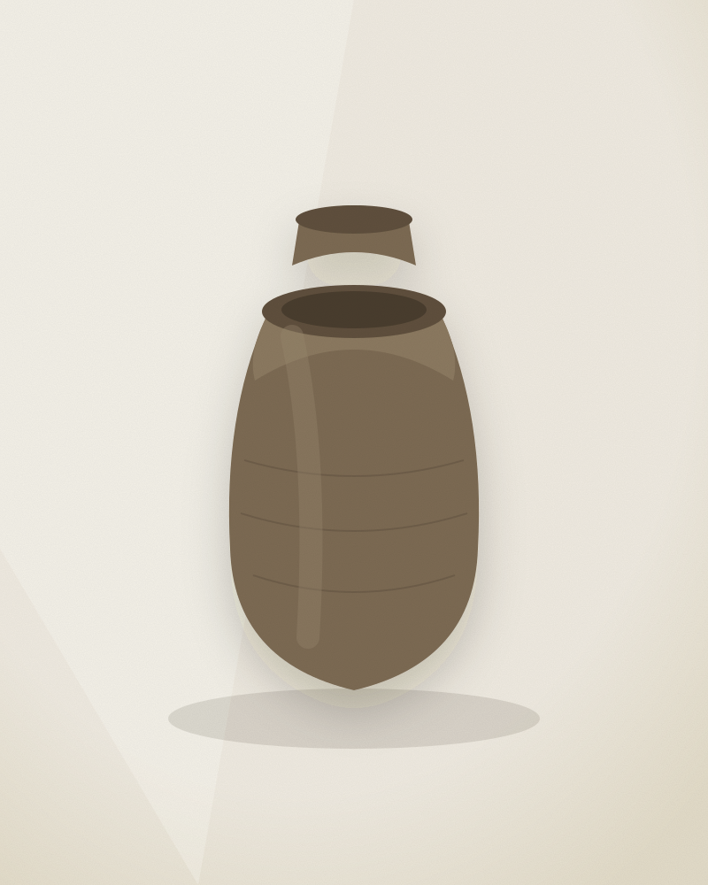

Ash-Glazed Storage Jar
A tall vessel for grain or oil, thrown in three sections and joined on the wheel. The glaze is not applied — it forms where wood ash settles on the shoulder during a four-day firing and runs toward the foot. No two are alike, and this one cannot be repeated.
Fired once, unglazed inside, sealed with the maker's own beeswax-and-oil finish. Holds roughly nine litres.
A considered purchase. Choosing to acquire opens a direct line to the maker to confirm the piece, arrange packing, and agree shipping — nothing is charged today.
- Maker
- Rukmini Devi
- Origin
- Bhuj, Kutch — India
- Technique
- Wheel-thrown stoneware, wood-fired
- Years in practice
- 22
- Dimensions
- 42 cm × 24 cm ⌀
- Firing
- Single, four-day anagama
- Format
- Static listing with process video
Rukmini Devi
Bhuj, Kutch — India · 22 years at the wheel · Endorsed by the Kutch Potters' Collective
Rukmini learned throwing from her grandmother, who made water pots for the village. She now fires a shared anagama kiln twice a year with six other potters, splitting the wood and the watch. Her process film follows this jar from a 14 kg ball of local clay to the moment it leaves the kiln.
Read her full profileRelated pieces
Other work carrying at least two verification markers.